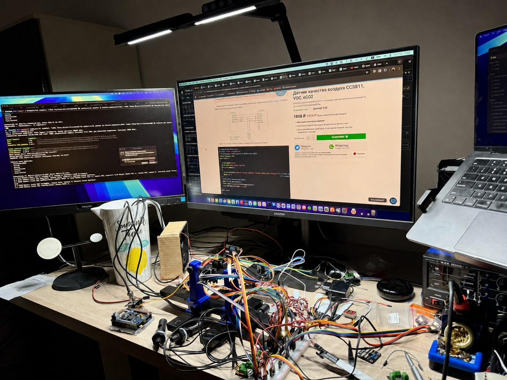
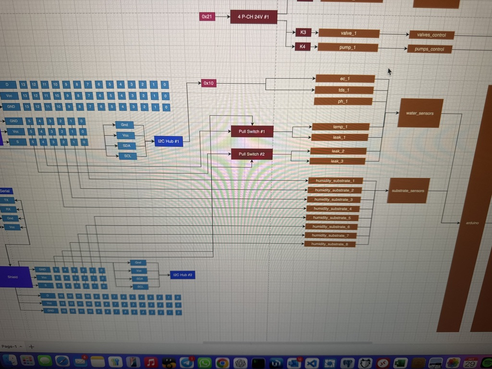
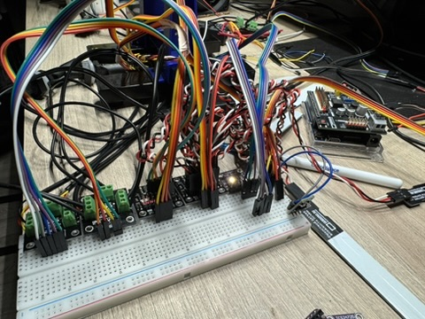
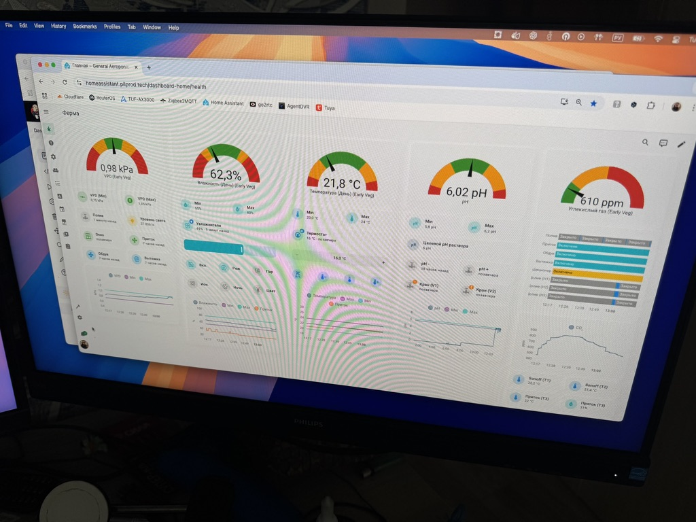
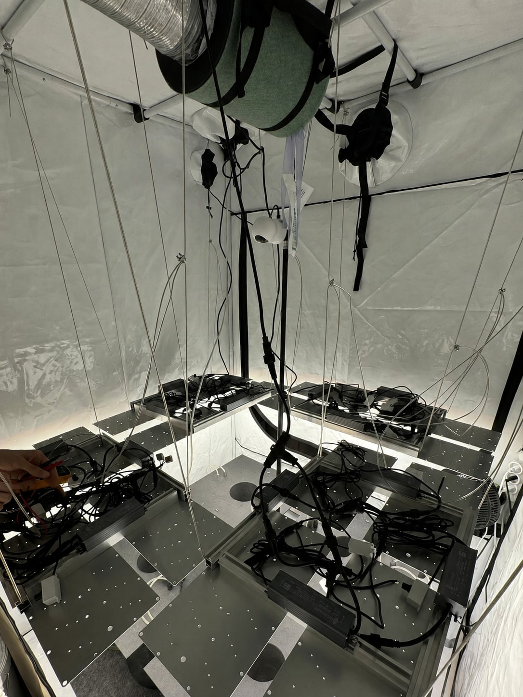
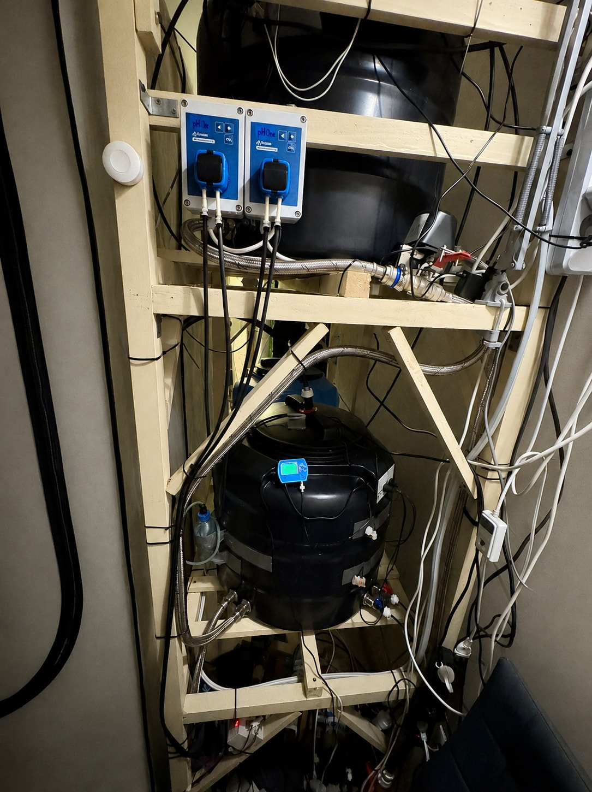
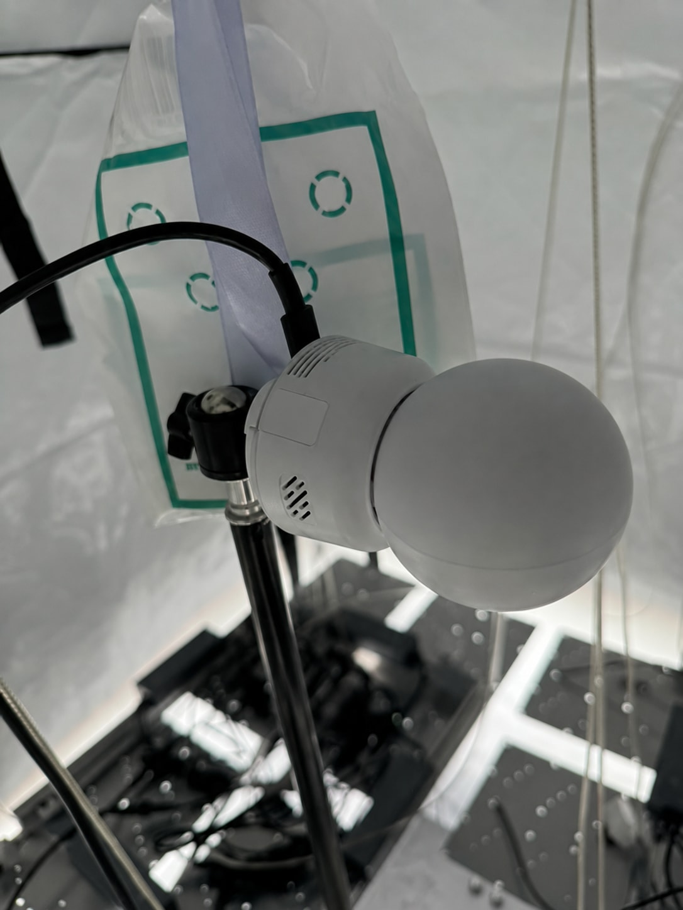
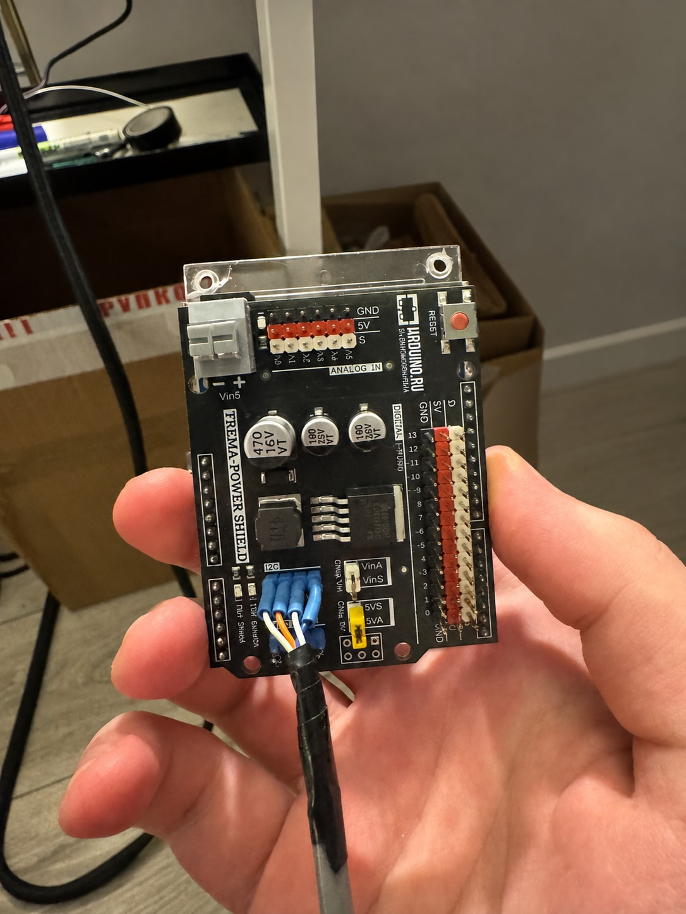
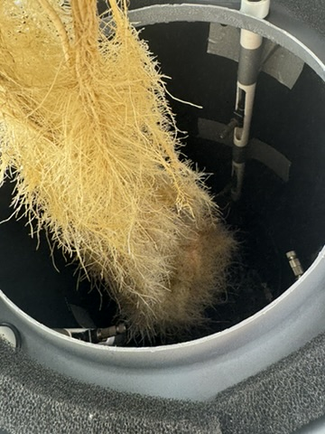

Ilya Papou · Ilya Popov · pilprod
Project sources
and lab photographs
Code, context and hands-on work behind three personal R&D projects.
Personal R&D · PoCs
Agent Orchestration Infrastructure
Jun 2026 – Present · Buenos Aires, Argentina
Personal R&D for developers and AI coding agents working on software and infrastructure tasks, with context-preserving handoffs, tool integration and human review.
Platform components were deployed on Google Cloud. Orchestration and approval flows include designed and prepared work; Agent Host contracts were validated with simulated providers, not a claimed production-wide end-to-end deployment.
LinkedIn Projects: Agent Orchestration Infrastructure · Personal R&D · PoCs
Associated Experience: Agent Infrastructure Engineer · Personal R&D · PoCs — YourOwn.Chat
Platform infrastructure
pilprod/yourown-chat
Google Cloud infrastructure and delivery configuration for the chat and agent platform.
Terraform, Helm and release-pipeline work.
Agent runtime
pilprod/substrate
Substrate fork used for external-worker and Agent Host runtime integration.
Fork of kagent-dev/substrate; upstream code and project-specific integration are distinct.
Upstream: kagent-dev/substrate
kagent fork
pilprod/kagent
Kubernetes-native agent orchestration fork used for integration experiments.
Fork of kagent-dev/kagent; not a claim of authorship of the upstream project.
Upstream: kagent-dev/kagent
kagent integration
pilprod/yourown-chat-kagent
Integration contracts, pinned source and release locks, and testbed configuration.
Integration and conformance layer, separate from the kagent fork.
Mattermost fork
pilprod/mattermost
Self-hosted team-chat fork with server-side patches and container-build workflows.
Fork of mattermost/mattermost; upstream ownership and licensing remain distinct.
Upstream: mattermost/mattermost
Runtime image build
pilprod/yourown-chat-mattermost
Build configuration combining Mattermost server and web submodules into a runtime image.
Includes a private web dependency; the public snapshot alone is not a complete public build.
Personal R&D
Home Aeroponics & IoT automation
Aug 2024 – Jan 2025 · Moscow City, Russia
An integrated aeroponics lab combining sensor electronics, C++ firmware, Python automation, MQTT and Home Assistant monitoring.
The photographs document the wider historical lab. The public repositories are selected archival snapshots, not the complete installation or proof of a currently buildable or safety-tested system.
LinkedIn Projects: Home Aeroponics & IoT automation · Personal R&D
Associated Experience: IoT & Automation Engineer · Personal R&D — Home Aeroponics & IoT automation
Controllers and integration
pilprod/aeroponics-iot-control
Python/MQTT climate-device controllers and sanitized Mosquitto and Zigbee2MQTT examples.
Historical snapshot; not the complete Home Assistant configuration. No integration or physical-safety validation claimed.
Sensor firmware
pilprod/aeroponics-sensor-firmware
Five archived Arduino prototypes for light sensing, water-sensor telemetry and relay-command experiments.
Experimental 2024 source variants, not final solutions or build-verified releases. Dependencies, incomplete integrations and hardware-safety limitations are documented per sketch.
Archived prototypes · 2024
- Light sensors with JSON/MQTT
Arduino Uno R4 WiFi prototype; missing modified sensor library, undefined software-I2C instances and unregistered message callback.
- Light sensors with Serial output
Four TCS34725 sensors through separate software-I2C buses; modified Adafruit dependency is absent. No MQTT.
- pH and relay commands
Serial-controlled relay experiment with pH readings. No MQTT; calibration and relay states are not hardware-validated.
- EC/TDS and Serial1 relay commands
Water-sensor and relay experiment. MQTT connects but does not publish telemetry in this variant.
- pH and moisture telemetry
pH and two analog moisture inputs with averaging and JSON/MQTT. Calibration, conversion and periodic reset remain unverified.
- Light sensors with JSON/MQTT
Lab photographs
9 photographs of the wider historical installation, also published in the controller README and firmware README. They do not verify that the archived firmware builds or that the full system is represented by the public code.
Five photographs have AI-retouched backgrounds or identifying areas, individually marked below. The wiring diagram, breadboard and root-chamber photograph have not been redrawn.
{kind=link}

Development boards, sensors, wiring and soldering tools during prototyping.
AI-retouched background / identifying areas.Published source photo{kind=link}
{kind=link}

Original component-connection drawing from system design.
Published source photo{kind=link}
{kind=link}

Controller connections and jumper wiring on the breadboard.
Published source photo{kind=link}
{kind=link}

Climate and water measurements, lighting controls and device states.
Published source photo{kind=link}
{kind=link}

Suspended fixtures, ventilation equipment and wiring inside the enclosure.
AI-retouched background / identifying areas.Published source photo{kind=link}
{kind=link}

Reservoirs, dosing pumps, valves, tubing and circulation plumbing.
AI-retouched background / identifying areas.Published source photo{kind=link}
{kind=link}

Camera placement within the experimental installation.
AI-retouched background / identifying areas.Published source photo{kind=link}
{kind=link}

A commercial power shield integrated into the electronics assembly.
AI-retouched background / identifying areas.Published source photo{kind=link}
{kind=link}

Suspended roots and internal tubing in the chamber.
Published source photo{kind=link}
Personal R&D
Zero-Trust Mesh & Open-source NGFW
Jan 2025 – Mar 2025 · Bangkok City, Thailand
A multi-region Tailscale lab with automated node configuration, GitOps-managed access policies and OPNsense network experiments.
Public sources are sanitized lab examples. They do not include live inventories, credentials or a claim that the examples are deployed as published.
LinkedIn Projects: Zero-Trust Mesh & Open-source NGFW · Personal R&D
Associated Experience: Network & Security Engineer · Personal R&D — Zero-Trust Mesh & Open-source NGFW
Node automation
pilprod/lab-network-automation
Ansible installation, enrollment and network configuration for Tailscale lab nodes.
Sanitized automation without private inventories or credentials.
Access policy
pilprod/zero-trust-mesh-policy
Tagged service-access policy for agents, storage, observability and workflow services.
Policy example, not a published live network configuration.
Google Cloud network lab
pilprod/gcp-ngfw-network-lab
Terraform LAN/WAN, routing and NAT foundation for an OPNsense lab.
Network foundation only; no appliance image, cloud deployment or apply is implied.